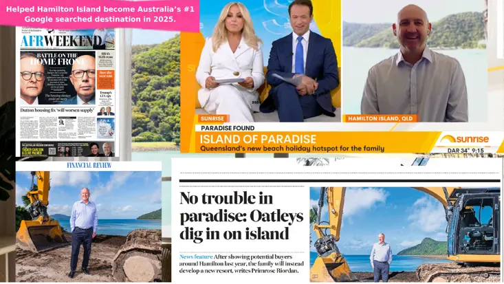
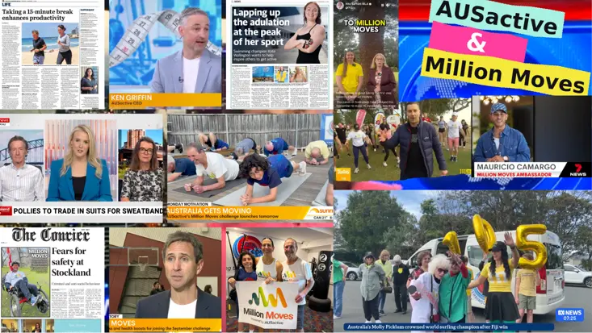
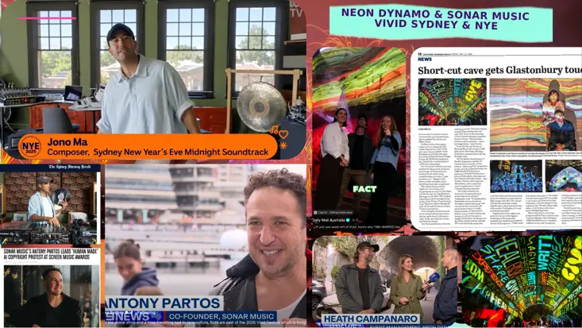
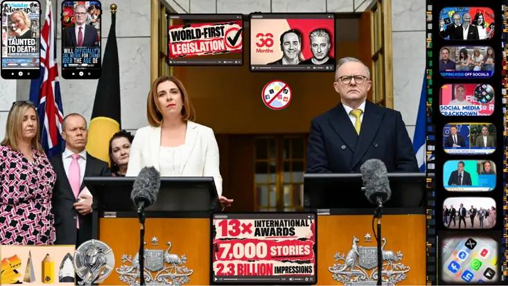
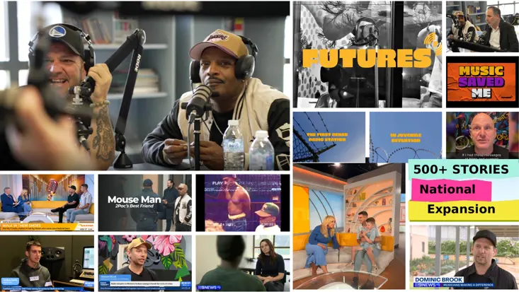

WaldeComms · Communications & content · Sydney
We turn businessesinto brands peoplecan't ignore
Some stories get coverage. Some change everything. Ex-Fleet Street PR that makes noise with impact.

Recent work that made noise
Coverage is good. Impact is better.
500+
stories for a national expansion
27M
reach = $80k new business (A Lasting Tale)
#1
Google-searched destination in Australia, 2025 (Hamilton Island)
World-first
legislation change (36 Months)
Recent workthat made noise
Swipe, scroll or use the arrows. Hover a card (tap on mobile) for the headline result.

TravelHamilton IslandTravel#1Australia's most Google-searched destination, 2025 →

Health / FitnessAUSactive & Million MovesHealth / FitnessMillion Moves+ Fit for Office campaigns for AUSactive →

Music / EventsNeon Dynamo & Sonar MusicMusic / EventsVivid + NYESydney New Year's Eve Midnight Soundtrack →
 Social impactA Lasting Tale
Social impactA Lasting TaleSocial impact27M reach= $80k new business →
 Music / EventsNoasis
Music / EventsNoasisMusic / EventsOasis reunionNews hook: Noasis, the tribute act to the British rock group →

Social impact36 MonthsSocial impactWorld-firstLegislation change for Australia →

ExpansionNational ExpansionExpansion500+stories →
Turn up the volume
Real words. Real results.
“WaldeComms are absolute PR guns of the highest calibre. Creative, persistent and lateral thinkers, they were the driving force behind the success of our Million Moves and Fit for Office campaigns.”
“WaldeComms are weapons. Gritty hustlers who know the media landscape inside out and pitch like machines. They were mission critical in the success of 36 Months driving Australia’s landmark world-first legislation change.”
“Thank you for putting my name to Channel 9. I’m now flooded with enquiries wanting to join my classes. This has made my 21-year effort serving the community worthwhile.”
1 / 3
Tap the quote or use the arrow keys. A new voice every five seconds.
Ready tomake noise?
Tell us the story. We’ll make it the one people can’t ignore.
Start the conversation →